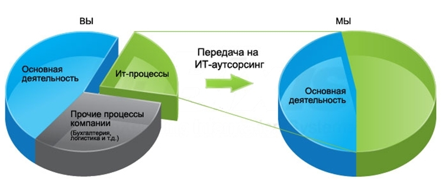

Мы принимаем на себя функции по поддержке ИТ-систем своих заказчиков. При этом гарантируем выполнение данных функций в соответствии с утвержденным уровнем сервиса.


Что самое главное в ИТ вашей компании? Чтобы всё работало! Правильно построенная ИТ-инфраструктура позволяет компании эффективнее работать, быстрее развиваться и сокращать издержки, но ее поддержание требует внимания. Перебои в работе даже одного компьютера, его пониженная производительность или выход из строя обходятся любой фирме в весьма ощутимые деньги, что уж говорить о внезапном падении сервера или, например, базы «1С: Предприятия»?
Застрахуйте свою технику от сбоев и получайте своевременную поддержку с услугой ИТ-аутсорсинга от компании «Техносервис»!
ЗАКЛЮЧАЯ ДОГОВОР С ТЕХНОСЕРВИСОМ, ВЫ ПОЛУЧАЕТЕ ПОЛНОЦЕННЫЙ ИТ-ОТДЕЛ НА УСЛОВИЯХ АБОНЕНТСКОЙ ПЛАТЫ, ЧТО ПОЗВОЛЯЕТ ВАМ
Сократить расходы в 1, 5-2 раза
Расходы на зарплату квалифицированных системных инженеров, состоящих в штате, несравнимы со стоимостью договора ИТ-аутсорсинга. По нашему опыту, экономия составляет до 40% в год. Это возможно благодаря автоматизации внутренних процессов, оптимальной загрузке специалистов и использованию стандарта качества управления ИТ-услугами.
Получить юридические гарантии быстрого устранения неисправностей
Заключая договор с ООО «ТехноСервис», вы имеете дело с ведущей IT-компанией в регионе, и избавляетесь от множества проблем, которые могли бы возникнуть при обслуживании частным специалистом. Мы оформляем договор, в котором четко прописываются сроки реакции, выездов, гарантированного восстановления сервисов и т. д. За нарушение условий предусмотрены неустойки.
Уменьшить количество сбоев в 3 раза
Каждый проект по абонентскому обслуживанию компьютеров начинается с комплексного аудита и устранения «узких мест» поддерживаемых IT-систем (почтовых сервисов, баз данных и т. п.), в результате чего количество сбоев снижается, в среднем, на 50-70%.
Решать все задачи в сфере ИТ в одном месте
Заключая договор на IT-аутсорсинг, вы получаете возможность решения всех задач с помощью «одного звонка», начиная от поставки и ремонта оборудования и заканчивая обслуживанием всей техники и программного обеспечения компании.
Работать с самыми квалифицированными специалистами
Наши инженеры сертифицированы, постоянно проходят тренинги, обладают многолетним опытом обслуживания компьютерных сетей, выполнения проектов модернизации и построения инфраструктуры компаний.
Иметь прозрачную систему отчетности
В основе обслуживания лежит система управления запросами на базе системы Help Desk, с помощью которой ведется строгий контроль выполнения заявок. Вы всегда можете отследить статус заявок, получить полную отчетность по их выполнению и т. д.
Гибко управлять расходами на ИТ
В любой момент вы можете изменить состав услуг сервисного и технического обслуживания компьютеров или объем обслуживаемой техники.



Вы можете подать заявку на консультацию по вопросам аутсорсинга
Наши менеджеры свяжутся с Вами сразу же после того, как Ваша заявка поступит в офис «Техносервис».